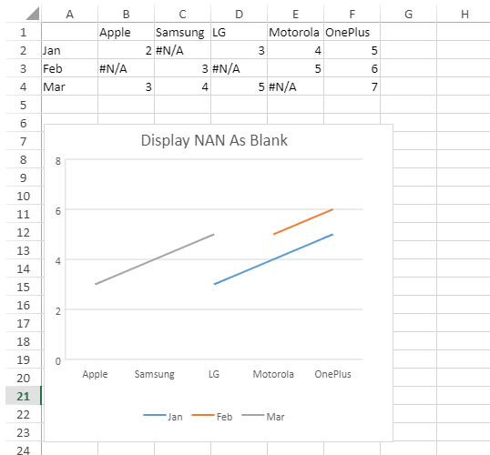

SpreadJS provides support to display #N/A cells as empty cells in charts. The displayNaNAsBlank property in SpreadJS API, when set to true, considers the cells containing #N/A values as empty cells.
When displayNaNAsBlank is set to true, the display of empty cells, when plotted on a chart depends on the value of displayBlanksAs method. It can have three values:
For more information on how empty cells are displayed in a chart, please refer Display Empty Cells in Chart.
The below screenshot depicts a chart created from data containing #N/A cells which are displayed as gaps.

However, when displayNaNAsBlank is set to false, the #N/A values are displayed depending on the type of chart. For example:
Note: Sunburst and Treemap charts don't allow #N/A cells within chart data.
Refer to the following example code to display #N/A cells as empty cells in the chart. The displayBlanksAs method shows empty cells as gaps.
| JavaScript |
Copy Code
|
|---|---|
// get the activesheet var activeSheet = spread.getActiveSheet(); // create array var na_error = GC.Spread.CalcEngine.Errors.NotAvailable; var dataArray = [ ["", "Apple", "Samsung", "LG", "Motorola", "OnePlus"], ["Jan", 2, na_error, 3, 4, 5], ["Feb", na_error, 3, na_error, 5, 6], ["Mar", 3, 4, 5, na_error, 7], ]; // set data activeSheet.setArray(0, 0, dataArray); // add chart var chart = activeSheet.charts.add('Chart', GC.Spread.Sheets.Charts.ChartType.area, 2, 85, 350, 350, 'A1:F4'); // displayNaNAsBlank just make the #N/A treat as "blank" chart.displayNaNAsBlank(true); //then displayBlanksAs will tell chart how the "blank" displays i.e. zero/ gaps/ connected chart.displayBlanksAs(GC.Spread.Sheets.Charts.DisplayBlanksAs.gaps); // set chart title chart.title({ text: "Display NAN As Blank" }); |
|